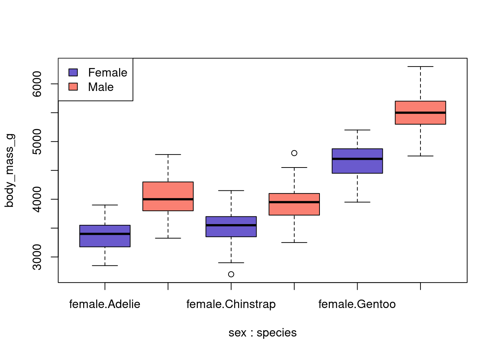

: female
: Adelie
Min. 1st Qu. Median Mean 3rd Qu. Max.
2850 3175 3400 3369 3550 3900
------------------------------------------------------------
: male
: Adelie
Min. 1st Qu. Median Mean 3rd Qu. Max.
3325 3800 4000 4043 4300 4775
------------------------------------------------------------
: female
: Chinstrap
Min. 1st Qu. Median Mean 3rd Qu. Max.
2700 3362 3550 3527 3694 4150
------------------------------------------------------------
: male
: Chinstrap
Min. 1st Qu. Median Mean 3rd Qu. Max.
3250 3731 3950 3939 4100 4800
------------------------------------------------------------
: female
: Gentoo
Min. 1st Qu. Median Mean 3rd Qu. Max.
3950 4462 4700 4680 4875 5200
------------------------------------------------------------
: male
: Gentoo
Min. 1st Qu. Median Mean 3rd Qu. Max.
4750 5300 5500 5485 5700 6300
massfit <-lm(body_mass_g ~ sex * species, data = penguins)summary(massfit)
Call:
lm(formula = body_mass_g ~ sex * species, data = penguins)
Residuals:
Min 1Q Median 3Q Max
-827.21 -213.97 11.03 206.51 861.03
Coefficients:
Estimate Std. Error t value Pr(>|t|)
(Intercept) 3368.84 36.21 93.030 < 2e-16 ***
sexmale 674.66 51.21 13.174 < 2e-16 ***
speciesChinstrap 158.37 64.24 2.465 0.01420 *
speciesGentoo 1310.91 54.42 24.088 < 2e-16 ***
sexmale:speciesChinstrap -262.89 90.85 -2.894 0.00406 **
sexmale:speciesGentoo 130.44 76.44 1.706 0.08886 .
---
Signif. codes: 0 '***' 0.001 '**' 0.01 '*' 0.05 '.' 0.1 ' ' 1
Residual standard error: 309.4 on 327 degrees of freedom
(11 observations deleted due to missingness)
Multiple R-squared: 0.8546, Adjusted R-squared: 0.8524
F-statistic: 384.3 on 5 and 327 DF, p-value: < 2.2e-16
boxplot(body_mass_g ~ sex * species, data = penguins, col =rep(c("slateblue", "salmon"), 3))legend("topleft", fill =c("slateblue", "salmon"), legend =c("Female", "Male"))

Inspect the massfit object. What type of data structure is it, and what does it contain?
It is a list with class “lm”. It contains lots of information about the model fit.
You are planning a publication about the association/interaction between species and sex on body mass. The paper will include descriptive statistics, statistical inference, and some figures. You will likely present the results at a conference or in a lab meeting.
What are some different approaches to save the results?
Discuss the pros and cons of your suggested approaches.
One approach would be to save is to save the regression fit as an rds file and read it into different R markdown documents to use it for different purposes. Also the figures could be saved as pngs and used in different documents. An alternative is to save the analysis dataset as a file, and the code used to reproduce the analysis, including the figures. The advantage of the 2nd approach is that the output can be tailored to the specific use of the results (e.g., change figure size/resolution for presentation vs manuscript).